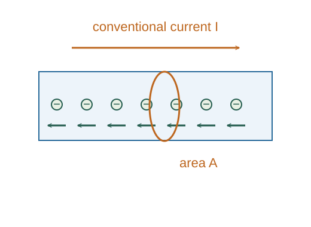

Derive current as charge flux and local continuity
Across a small oriented area dA, the volume swept per time is the normal velocity component times dA.
What the symbols mean
ρcharge: volume charge density; 𝐮: carrier velocity; 𝐉 = ρcharge𝐮 for one continuous carrier flow; n: carrier number density.
When this applies
A specified oriented surface, macroscopic smooth charge flow; sum species contributions if several charge types move.
Developing the argument

Count crossing volume
Across a small oriented area dA, the volume swept per time is the normal velocity component times dA.
Multiply by charge density
Charge carried by that volume is density times volume. This identifies local current density.
Integrate over the surface
Add contributions using the chosen normal. For a uniform perpendicular flow, I = JA.
Conserve charge within a volume
Outward current removes enclosed charge. Applying the divergence theorem to this balance gives the local continuity equation.
A worked example
If a uniform J = 10⁶ A/m² is normal to a 10⁻⁶ m² wire cross section, current is 1 A.
Derivation behind this calculation ↗A point to keep straight
Current is a signed surface flux; current density is a vector. Electrical resistivity and charge density often share a rho symbol but have different units.
Check the assumptions and derivation ↗